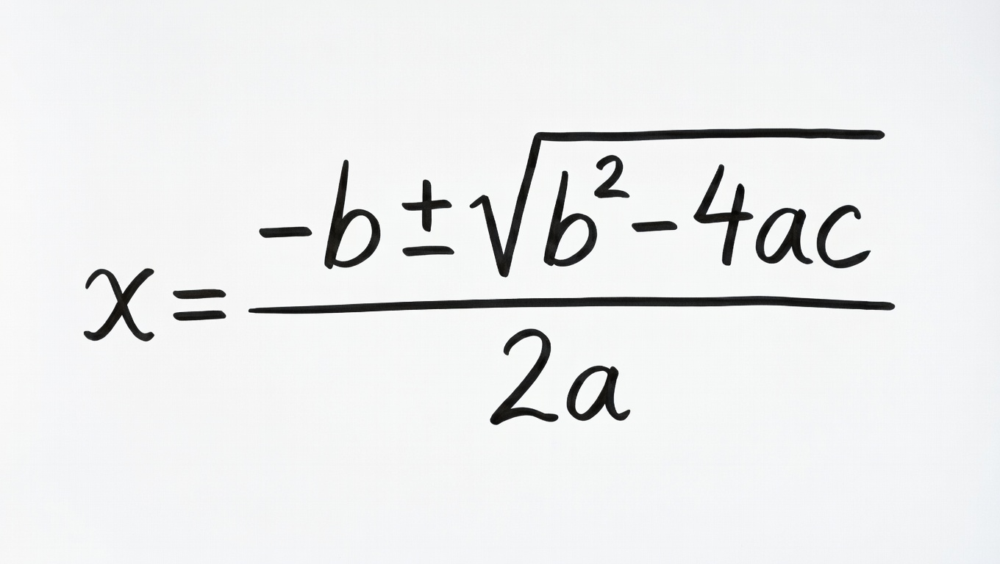
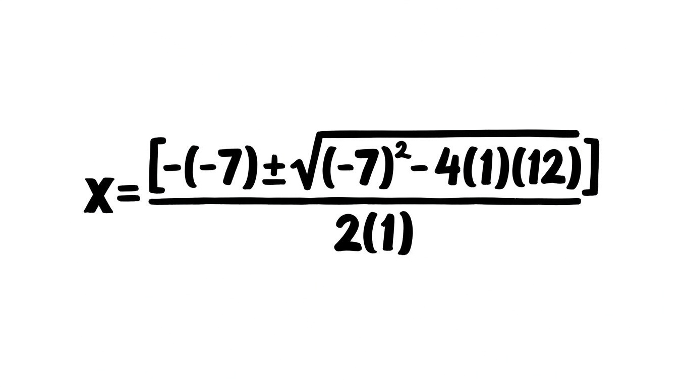

A quadratic equation is an equation of degree 2 (highest power of x is 2).
ax² + bx + c = 0
where:x² + 5x + 6 = 0
2x² − 3x − 2 = 0
x² − 9 = 0
These are Quadratic Equations
Factorizing is breaking an equation into smaller "building blocks" (factors) that multiply together to give the original result.
To "FACTOR" is simply to introduce brackets back to the equation
It is the opposite of Expanding(Removing The brackets)
Solve the following Quadratic Equation Using Factorization Method:
x² − 7x + 12 = 0
Clue:We introduce the brackets from the "sum" and the "product"
Solution
(i)The product = x² Coefficient X The constant
The x 2 coefficient is 1
The Constant is 12
Product = 1 X 12 = 12
(ii)Find the sum
Clue:The sum is the "x" coefficient
In this case, the sum is -7
(iii)Find the factors
Ask yourself: Which two numbers gives "-7" when added and "12" when multiplied?
The factors are "-3" and "-4"
This is because (-3) + (-4) = -7 and -3 X -4 = 12
(iv)Replace the sum by the factors
x² - 3x -4x + 12 = 0
(v)Factor out the Equation
x(x - 3) - 4(x - 3) = 0
After Factorizing, you will notice that 2 brackets are identical. Take only one of them.
Form another bracket from the Equation
The resulting Equation will be :
(x - 3) (x - 4) = 0
(vi)Solve each bracket separately.
(x - 3) = 0
x = 3
(x - 4) = 0
x = 4
you notice that you will find two values of x.
A quadratic equation usually has two solutions (roots). These are denoted as X1 and X2
x1 = 3
x2= 4
Completing the square is a method of solving a quadratic equation by turning it into a perfect square so it becomes easy to solve
Solve the following Quadratic Equation Using Completing Square Method:
x² − 7x + 12 = 0
solution
(i)Make sure the equation is in the form:
ax² + bx + c = 0
Our Equation is already in that form:
x² − 7x + 12 = 0
(ii)Move the constant to the other side
(leave x terms on one side)
x² − 7x = -12
(iii)Make sure the coefficient of x² is 1
Divide Through by a (if a ≠ 1)
x² − 7x = -12
(iv)Use the formula: "(b/2)2 = C" to make another constant for the equation
(Take half of the coefficient of x, then square it)
NOTE:For easier calculation,just Write it as (b/2)2
(v)It becomes: (-7/2)² which is the same as (-3.5)²
(vi)Add that number to both sides of the equation
x² - 7x + (3.5)² = -12 + (-3.5)²
(vii)The left side is now a perfect square trinomial, which can be written as: (x - 3.5)²
(viii)Simplify the Left side of the equation and evaluate the right part of the equation.
(x - 3.5)² = -12 + 12.25
(x - 3.5)² = 0.25
(ix)To find "x",we need to find the squareroot of each part.
√(x - 3.5)² = ±√(0.25)
(x)Solve for x
(x - 3.5) = ±(0.5)
x1 = + 0.5 + 3.5
x1 = 4
x2 = - 0.5 + 3.5
x2 = 3
x1 = 4
x2= 3
The Quadratic Formula is a universal mathematical formula used to find the exact values of x (the "roots" or "solutions") for any quadratic equation in the standard form:
ax² + bx + c = 0
The Quadratic Formula is derived from completing the square. It is the "Ultimate Shortcut" of solving any Quadratic equation.
To find the values of "x" directly for a Quadratic equation in the form :ax² + bx + c = 0 use the quadratic formula;

This is the Quadratic Formula
Solve the following Quadratic Equation Using The Quadratic Formula:
x² − 7x + 12 = 0
solution
(i)Make sure the equation is in the form:
ax² + bx + c = 0
Our Equation is already in that form:
x² − 7x + 12 = 0
Relate this Equation with : ax² + bx + c = 0
After relating, we discover that:
Substitute the values of "a" , "b" , and "c" to the Quadratic Formula

Simplify the solution
After simplifying:
x = (7 ± 1) / 2
Solve for x
x1 = (7 + 1) / 2
x1 = 8/2
x1 = 4
x2 = (7 - 1) / 2
x2 = 6/2
x2 = 3
x1 = 4
x2= 3
Attempt the following Questions:
(i)x² + 5x + 6 = 0
(ii) x² − 7x + 12 = 0
(iii) x² − 3x − 10 = 0
(iv) x² + 8x + 15 = 0
(v) x² − 4x − 21 = 0